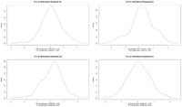
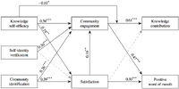

Professor
Institute of Service Science
College of Technology Management
National Tsing Hua University
Current Events
Keynote Speech: Programmatic Approaches to Structural Equation Modeling
SASEM 2021 - July 10
Invited Talk: Ruby in the Classroom: Going off the Rails with Roda
COSCUP x RubyConf TW 2021 - Aug 01
Publication Highlights
See all papersThe Elephant in the Room: Predictive Performance of PLS Models
Journal of Business Research
An outline of how predictive PLS methodology can strengthen theory-building research, with software tools to implement it.
Journal of Business Research
An outline of how predictive PLS methodology can strengthen theory-building research, with software tools to implement it.
The Central Role of Engagement in Online Communities
Information Systems Research
A framework that demonstrates what engagement is, where it comes from, and how it powerfully explains knowledge contribution and word of mouth.
Information Systems Research
A framework that demonstrates what engagement is, where it comes from, and how it powerfully explains knowledge contribution and word of mouth.